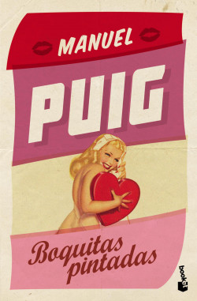
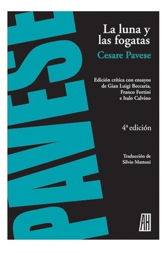
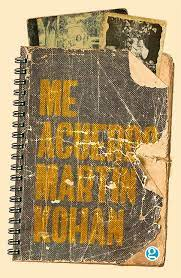
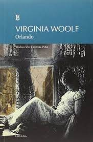
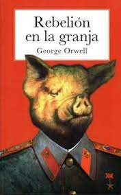

TÍTULOS RECOMENDADOS
Boquitas pintadas
Boquitas pintadas es una novela del escritor argentino Manuel Puig. Está escrita en forma de folletín y habla de los amores, las mezquindades y las pequeñas miserias de los habitantes de un pueblo.
La luna y las fogatas
En este libro de Cesar Pavese, Anguilla, que ha pasado veinte años en América, regresa a su aldea natal. Anguilla, acompañado por su amigo y guía Nuto, redescubre la tierra en que nació.
Me acuerdo
Me acuerdo, el último libro de Martín Kohan exhibe la enumeración de recuerdos que el autor de Ciencias morales evoca al calor de una escritura precisa, ajustada.H abla de su infancia con la frialdad del observador, con la distancia.
Orlando
Orlando, la novela biográfica escrita por Virginia Woolf, se trata de una obra en parte biográfica, basada en la vida de la novia de Woolf Vita Sackville-West.
Cien años de soledad
Cien años de soledad es una novela del escritor colombiano Gabriel García Márquez, considerada una obra maestra de la literatura hispanoamericana y universal, y una de las obras más traducidas y leídas en español.
Rebelión en la granja
Rebelión en la granja es una novela corta satírica del escritor británico George Orwell. Publicada en 1945, la obra es una fábula mordaz sobre cómo el régimen soviético de Iósif Stalin corrompe el socialismo.